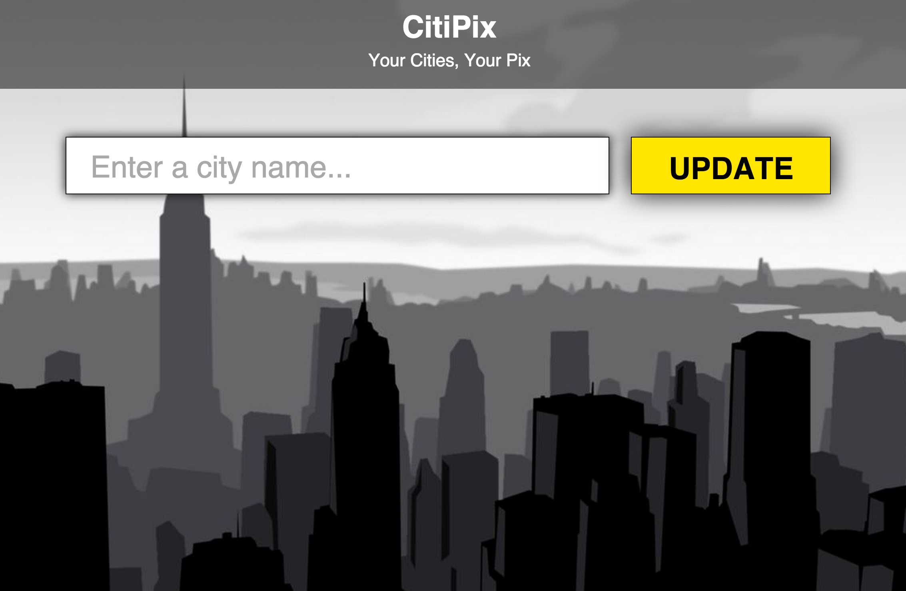

Homework Review!
Homework Due: Wednesday, September 30
- Example Project
- 
jQuery Selector Review/Practice
-
Download the file below. Follow best practices and seperate CSS and JS into their own files.
Then add the necessary javascript/jquery to answer all questions.
Starter File
Javascript Basics Review
Variables
Object Notation
-
Anatomy of a Function
- What is the difference between a Function and a Method?
Anatomy of a jQuery script
Variables Lab
Conditionals Lab
- Let's compare two number on a page and tell if they are >, < or ==.
- Click here for Starter Code
- Solution: Compare Two Numbers!
Blackout Lab
- Click here for Starter Code
- Solution: Create a BLACKOUT!
- Advanced Blackout? Draw a building and switch on and off the lights colors based on light or dark.